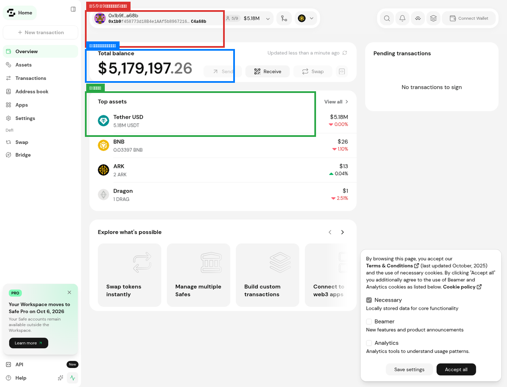
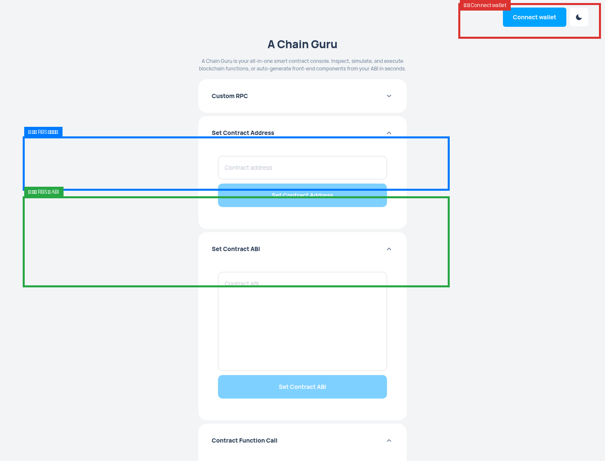
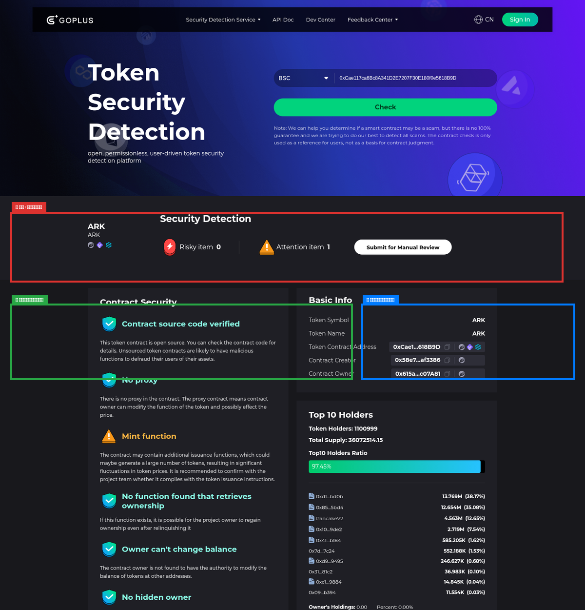

① 所有查询都是公开的，任何人（包括客户）都能自己查。
② 链上数据会变动（例如国库余额），看的是「机制」不是「数字」。
③ 图片是介面示意，实际数据请以你查到的为准。
查询总览
| 查什么 | 去哪查 | 教程 |
|---|---|---|
| ① 底池（LP）是否上锁 | BscScan | 下方文字指引 |
| ② 铸币合约是否开源 / 权限是否丢弃 | BscScan | 下方文字指引 |
| ③ 国库是否多签 | Gnosis Safe | ★ 图文 |
| ④ EM 智能发币模组 | BscScan + GitHub | 下方文字指引 |
| ⑤ RBS 市值稳定模组 | ACG Tools | ★ 图文 |
| 加分｜CertiK 安全审计 | CertiK Skynet | 下方文字指引 |
| 加分｜合约安全扫描 | GoPlus | ★ 图文 |
第一问｜底池（LP）是否上锁？
查询步骤
网址：bscscan.com
0xCAaF3c41a40103a23Eeaa4BbA468AF3cF5b0e0D8
查看 LP 代币的持有者分布。
要看什么
你要找的是这两个地址：
| 地址 | 名称 | 代表什么 |
|---|---|---|
0x000...0000 | 黑洞地址（零地址） | 最初随系统而生的销毁地址 |
0x000...dEaD | 死亡地址 | 人为创造的销毁地址 |
如果这两个地址（黑洞 / 死亡地址）持有绝大部分 LP 代币 → 就是已上锁。
因为这两个地址没有私钥，谁都无法取出里面的资产，包括项目方。
→ 结论：任何人（含项目方）都无法撤池跑路。
如果 LP 代币主要在某个普通钱包地址（有私钥的地址）手上 → 没上锁。
那意味著那个钱包的主人随时可以撤走所有流动性 → 极大风险。
第二问｜铸币合约是否开源 & 权限是否丢弃？
查开源
0x615a2a799c49AF74E91b4C3Ca5eaD68897c07A81
看到 Read Contract / Write Contract 两个子标签 → 代码已开源。点进去能看到完整函数列表，任何人都能审计。
只显示：「Are you the contract creator? Verify and Publish your contract source code」→ 代码没公开，有黑箱风险。
查权限是否丢弃
在 Contract 页面搜寻以下关键词：
ownerrenounceOwnershiponlyOwnergetOwner
找到「Read Contract」里的 owner 函数，点击查询。
如果查出来的 owner 地址是 0x0000000000000000000000000000000000000000（零地址）
→ 表示「没有人是 owner」→ 权限已被丢弃，无法再增发、无法再改参数。
如果 owner 显示的是某个真实的钱包地址 → 那个钱包还有控制权，可以增发、可以改规则 → 有风险。
第三问｜国库是否多签？
查询网址
app.safe.global/home?safe=bnb:0x1b9f458773d18B4e1AAf5b896721697215C4a68b

图：ARK 国库的 Gnosis Safe 页面。标注 ① 多签门槛 ② 国库余额 ③ 资产明细
图中三个标注点：
- 顶部显示 5/9 → 意思是「9 位签名者，需要 5 人通过才能动钱」
- 国库总余额（链上公开可查）
- 资产明细：USDT / BNB / ARK 等
看到 X/Y 的标记（如 5/9）→ 这是多签钱包。
意思是：任何人（包括项目方）想动国库的钱，都要至少 5 个人签名同意。一个人无法独自转走资金。
如果是一个普通钱包（没有 X/Y 标记）→ 单签，一个人就能提走所有钱 → 黑箱风险。
补充：多签只是「执行者」，不是「决策者」。真正的决策还要经过 ARK DAO 社区投票（用 Tally 平台）。
第四问｜EM 智能发币模组
查什么
- 查铸币合约是否开源（见第二问）
- 查发币逻辑：债券售出 → 资产注入 LP → 黑洞锁定 → 才允许发币
- 到 ARK 官方 GitHub 查看合约代码：
github.com/ark-defai/ark-code
开源可查 → 发币逻辑写死在链上，不能临时改。
债券关闭 → 发币即停止，无法凭空印币。
每一枚产出都有真实资产对应（MCL 铸币上限监控）。
第五问｜RBS 市值稳定模组
查询步骤
www.acg.tools，点击「Connect Wallet」连接钱包
0x23876D9F06F8290F119Fb39B7FDCf93A08e2D616
从 GitHub 复制：github.com/ark-defai/ark-code/tree/main/modules/RBS
在 Contract Function Call 下拉选单选「To Address」，点击 Execute。

图：ACG Tools 操作介面。① 连接钱包 ② 贴合约地址 ③ 贴 ABI
系统返回 RBS 所有去向地址的列表——结果只有一个：
0x1b9f458773d18B4e1AAf5b896721697215C4a68b（就是国库地址）
→ 意思是：RBS 的钱唯一去向 = 国库，没有第二条路径、没有隐藏地址。
加分项｜CertiK 安全审计
skynet.certik.com，搜索「ARK」，点进正确的代币页面
① 代币综合分：87.4 分 + 2A（仅作参考）
② 代币扫描分（Token Scan）：95.01 / 100 ← 这才是安全指标
③ 代码安全：100 分（22 项安全问题全部通过）
另看三个勾：通过审计、官方悬赏白帽、审计代码与部署代码一致。
为什么要看「代币扫描分」而不是「综合分」？
很多项目利用认知差，让你只看综合分就说「安全」。但真正的安全指标是代币扫描分——95% 以上项目在这里是不合格的。
加分项｜GoPlus 合约安全扫描
网址：gopluslabs.io/token-security/56/0xCae117ca6Bc8A341D2E7207F30E180f0e5618B9D

图：GoPlus 安全扫描。① 风险/注意项目 ② 合约源码已验证 ③ 合约拥有者资讯
- Risky item（风险项目）：0 → 没有高风险
- Attention item（注意项目）：3 → 有 3 项需留意
- Contract source code verified → 绿勾，源码已验证
- No proxy → 绿勾，无代理合约
最后｜一句万能话术
「妳不信我说的没关系，我们现在就查。」
——然后打开上面的网址，一步一步查给她看。这一句话的杀伤力，比任何话术都大。
附录｜官方怎么教查询
以下是社群分享者提到的：
「建议大家可以来到我们下午三点钟的小狐狸微课堂，我们每周的 1、3、5 有专门老师来教大家怎么样进行链上数据的查询。」
→ 查询课在「小狐狸午课」（15:00–15:40）。
- 周一 / 三 / 五：链上查询 + AMA 访谈
- 周二 / 四 / 六：阿奇 AI 实战教学 + ARKIE 币系统操作